Nu Linh, chanteuse r&b francophone d'origine vietnamienne
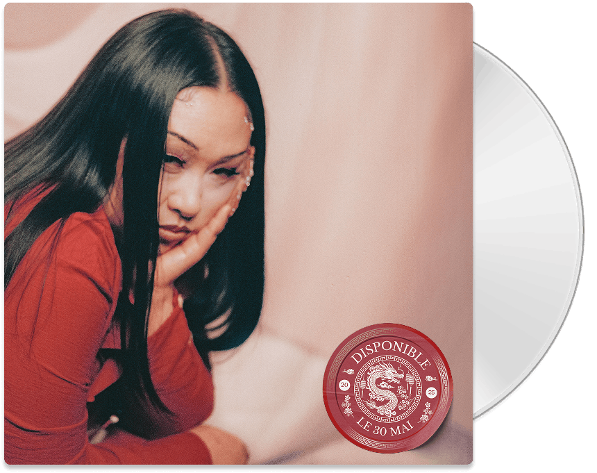
THE Broken hearts club
vol 2
The Broken Hearts Club Vol.2 est la suite du premier volume.
Cet album raconte le parcours de Nilh, une jeune femme en quête de reconstruction, confrontée à l’amour, à ses illusions et aux épreuves qui vont profondément la transformer.
Le projet prend place à la fin du confinement, dans une période de remise en question, où Nilh tente de se reconstruire à travers l’amour, la foi et ses propres contradictions.
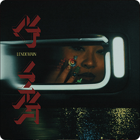
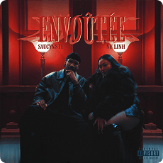
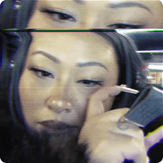
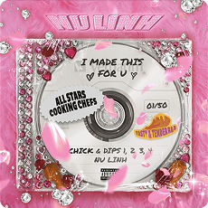
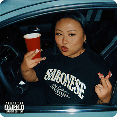
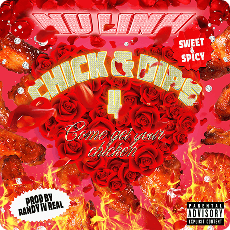
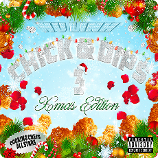
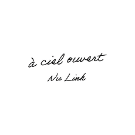
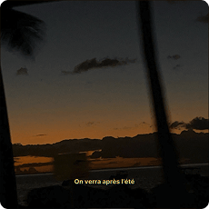
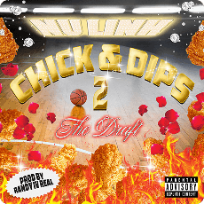
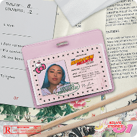
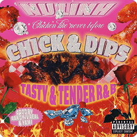
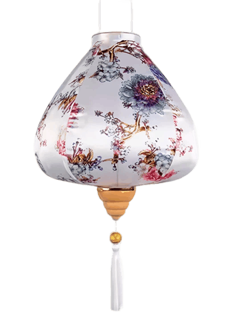
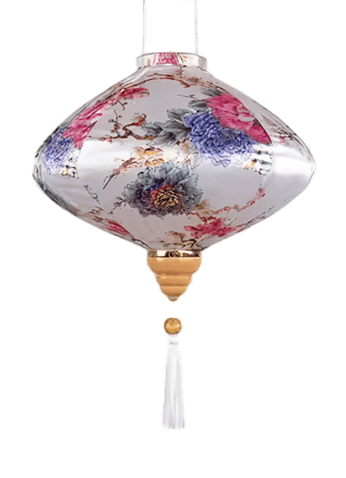
POR
TRAIT
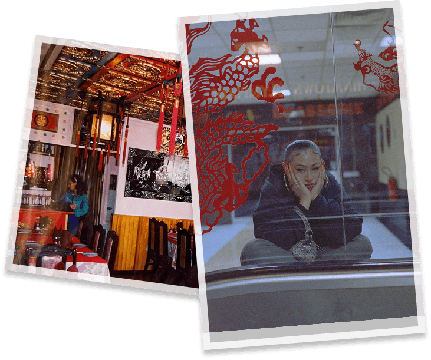
Originaire du Sud de la France et actuellement basée à Paris, Nu Linh puise son inspiration chez des artistes tels que Musiq Soulchild, Brandy ou encore Faith Evans. Sa musique est teintée de R&B et de son héritage culturel.
Son nom d'artiste, Nu Linh, tiré de son prénom Nhu Linh, est une référence à la Nu Soul. "Nu" symbolise également la renaissance et l’évolution en tant que femme et artiste, tandis que "Linh" signifie "âme" en vietnamien.
Témoin de la résilience de sa mère et du courage de ses parents issus de l’immigration, l’enfance de Nu Linh est empreinte de foi et de valeurs solidement ancrées. Sa musique trouve ses racines dans le restaurant familial où elle baignait dans la musique vietnamienne et chinoise.
Un soir, après le service, son oncle lui fait découvrir Boyz II Men et Brian McKnight, élargissant ainsi ses horizons musicaux. Le père de Nu Linh, impliqué dans la communauté, a fortement influencé son approche artistique.
Artiste autodidacte, Nu Linh s’est perfectionné dans les techniques du son et le graphisme, révélant sa polyvalence artistique. Ses compétences englobent l’écriture, le chant, l'enregistrement, le mixage, ainsi que la création de ses propres visuels et merchandising, lui assurant la maîtrise totale de son processus créatif.
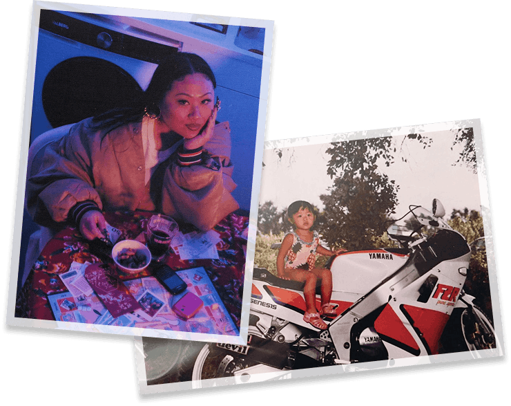
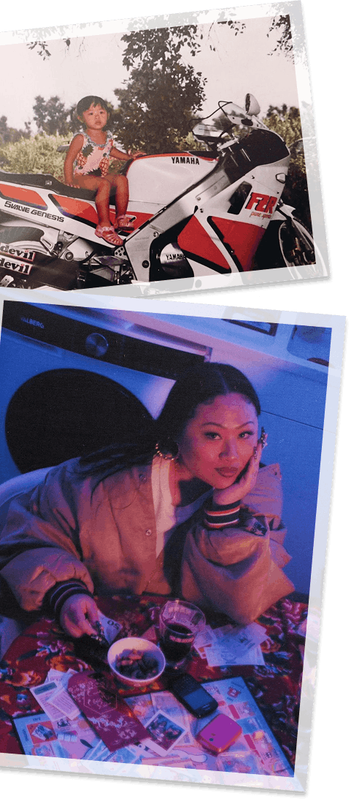
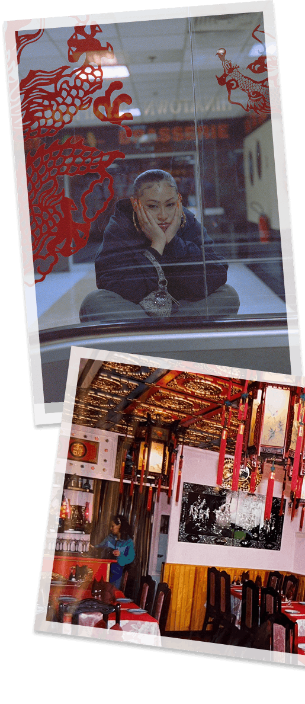